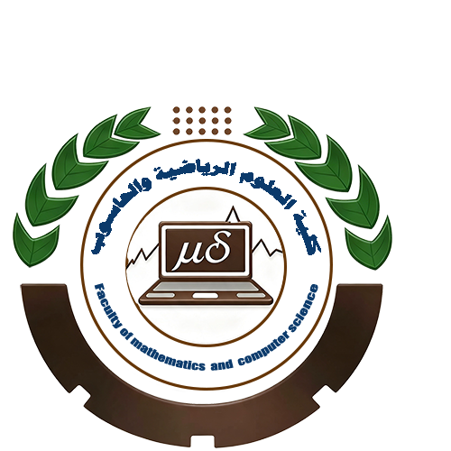

علوم الحاسوب والرياضيات
يجمع بين المهارات الرياضية والحوسبية، ويتيح العمل في تحليل البيانات وعلوم البيانات والذكاء الاصطناعي والنمذجة والمحاكاة الرياضية.
التفاصيل ←
جامعة الجزيرة — السودان
تمثل كلية العلوم الرياضية والحاسوب بجامعة الجزيرة أحد المكونات الأكاديمية التي تجمع بين علوم الرياضيات والإحصاء والحوسبة. في عصر الذكاء الاصطناعي والتحول الرقمي، أصبحت المهارات الحاسوبية والرياضية من أكثر المهارات طلباً في سوق العمل.
تأسست الكلية عام 1993م امتداداً لقسم الرياضيات والإحصاء والحاسوب الذي أُنشئ عام 1978م، وظلت منذ ذلك الحين تُسهم في إعداد كوادر مؤهلة تعمل اليوم في مؤسسات مرموقة داخل السودان وخارجه.
أجاز مجلس كلية العلوم الرياضية والحاسوب بجامعة الجزيرة الخطة الاستراتيجية للكلية للفترة 2026–2030م، ومقترح برنامج بكالوريوس الذكاء الاصطناعي، إلى جانب مقترح إنشاء قسم للذكاء الاصطناعي وعلم البيانات.
أشاد مدير الجامعة بالجهود التي بذلتها الكلية في تجاوز آثار الحرب واستعادة نشاطها وعودة الطلاب إلى مقاعد الدراسة، بما يعكس قدرتها على استئناف رسالتها الأكاديمية ومواجهة التحديات، مع التأكيد على أهمية المحافظة على استقرار العملية الأكاديمية.
تناول تقرير الأداء جهود إعادة تأهيل المرافق والمنشآت، وصيانة المعدات والتجهيزات، وتحسين البيئة التعليمية، إلى جانب التوسع في استخدام الطاقة الشمسية لدعم استقرار الإمداد الكهربائي واستدامة الخدمات، بما يسهم في تهيئة بيئة أكاديمية أكثر ملاءمة.
يجمع بين المهارات الرياضية والحوسبية، ويتيح العمل في تحليل البيانات وعلوم البيانات والذكاء الاصطناعي والنمذجة والمحاكاة الرياضية.
التفاصيل ←يوفر أساساً في الإحصاء والحوسبة وتحليل البيانات، ويفتح مجالات للعمل في علوم البيانات والتحليلات الذكية والتنبؤ وتحليل المخاطر.
التفاصيل ←برنامج بكالوريوس الشرف، يؤهل الخريجين للعمل في تطوير البرمجيات وهندستها وتصميم النظم وقواعد البيانات والشبكات وأمن المعلومات.
التفاصيل ←برنامج الدبلوم التقني الذي يركز على الجوانب التطبيقية، ويؤهل للعمل في الدعم الفني وصيانة الحاسوب وتشغيل الشبكات وإدارة الأنظمة.
التفاصيل ←لأنها تمنحك الأدوات التي تمكّنك من بناء مستقبل مهني متميز في مجالات:
إذا كنت تبحث عن تخصص يجمع بين الإبداع والتكنولوجيا، فإن الكلية هي بوابتك نحو مهن المستقبل.